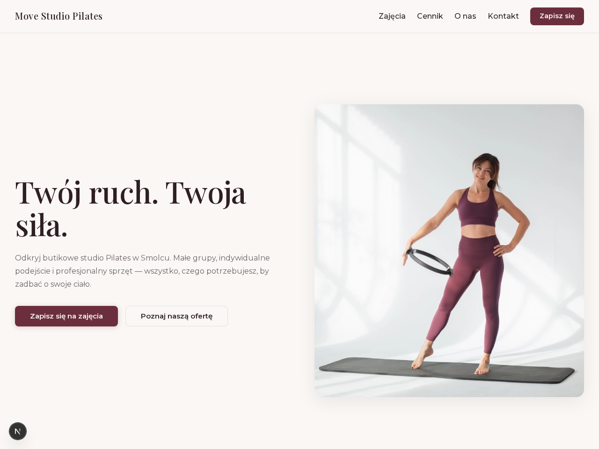
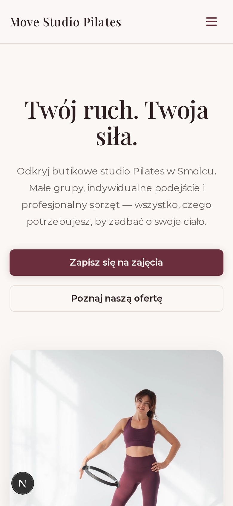
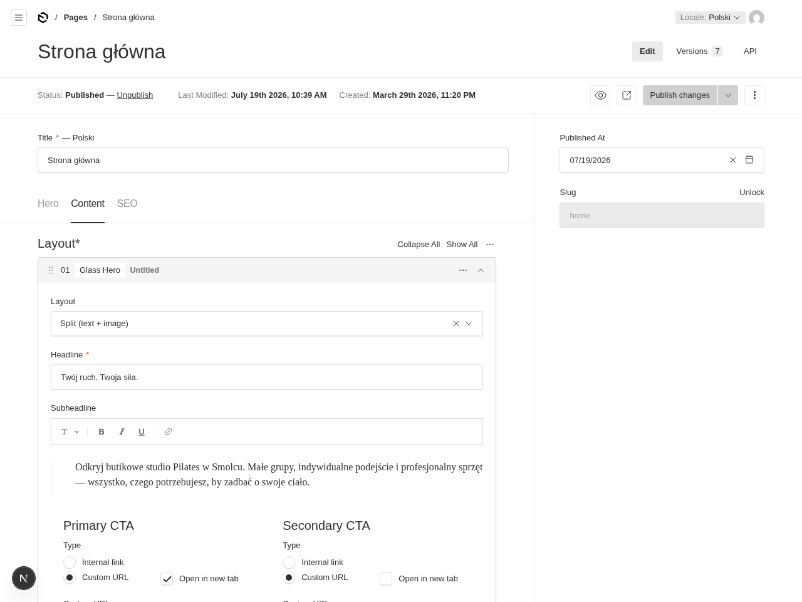
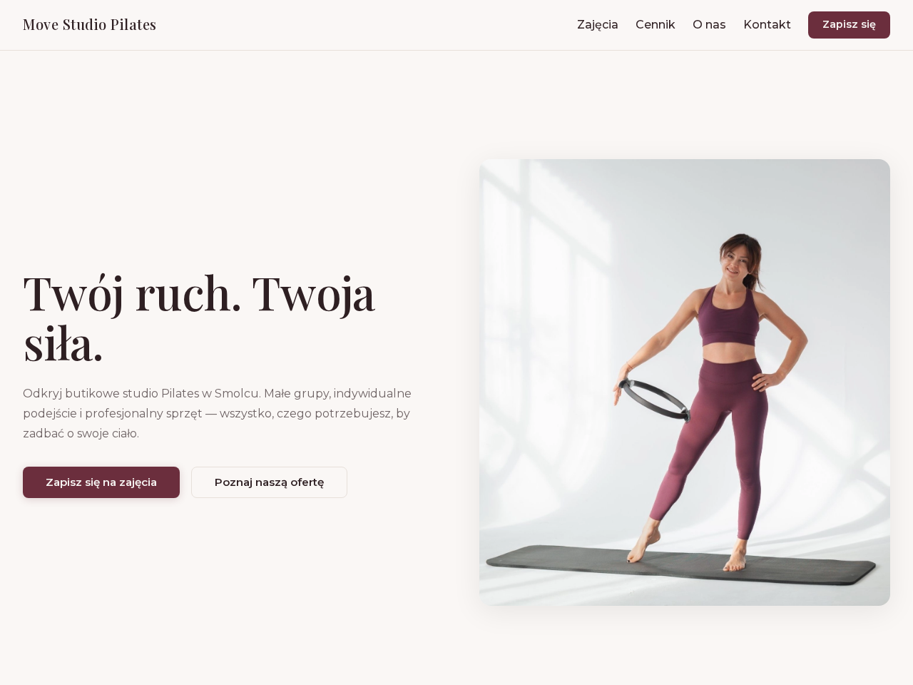

Starter za 49 zł · paczka do pobrania od razu po płatności
Payload CMS 3 + Next.js 15, prompty na każdy etap i instrukcja od rozpakowania do działającej strony. Wymagany własny agent — Claude Code lub Codex — i podstawy pracy z nim.
Nie zaczynasz od pustego katalogu i nie zaczynasz od czytania kilkunastu plików: otwierasz START.md i idziesz krok po kroku, aż strona chodzi lokalnie.
49 zł brutto, płatność jednorazowa. Link do pobrania paczki dostajesz mailem zaraz po płatności. Paczkę dostajesz natychmiast, więc prawo odstąpienia nie przysługuje — zwrotów nie ma.
Przykład
Starter to ten sam fundament, na którym powstała strona poniżej: pięć podstron, treści edytowalne w panelu CMS, wersja mobilna, formularz. Poniżej działająca strona zbudowana w tym modelu pracy i opublikowana na prawdziwej domenie.




Move Studio powstało na tym samym starterze i w tym samym modelu pracy, który dostajesz w paczce. Publikacja na własnej domenie to osobny krok — opisuję go niżej uczciwie.
Zakres
Co masz po pracy z agentem:
Zawartość
prompty/ — research branży, katalog stylów, audyt gotowej stronyDEPLOYTIPS.md, albo dokładasz sprint, w którym hosting na czas sprintu i miesiąc po nim jest w ceniePlik PLAN.md — żywy stan Twojego projektu — tworzy agent w pierwszej fazie pracy. W paczce go nie ma i tak ma być.
Pierwsza sesja
Bez marketingowego „w 5 minut". Realnie: kilkanaście minut setupu, w którym większość czasu zjada instalacja zależności — a potem tyle, ile potrwa Twoja sesja z agentem.
Docker, Node 20+, pnpm. Trzy komendy, każda ma coś wypisać. Jeśli którejś brakuje, START.md mówi wprost, skąd ją wziąć.
Kopiujesz konfigurację, generujesz sekret CMS-u, podnosisz bazę w Dockerze, instalujesz zależności, robisz migrację i odpalasz pnpm dev. Każda komenda jest w instrukcji dosłownie, razem z tym, co zobaczysz po drodze.
Wchodzisz na /admin, zakładasz pierwszego użytkownika i od razu masz panel, w którym potem edytujesz treści strony.
Piszesz krótkie zlecenie (minimalny wsad to branża i miasto — resztę agent dopyta) i mówisz mu: „przeczytaj INIT_PROMPT.md i wykonaj go od A do Z". Agent prowadzi Cię przez brief, kierunek wizualny i budowę, korzystając z promptów i reguł z paczki.
Agent prowadzi PLAN.md — listę kroków z odhaczaniem. Przerywasz w środku tygodnia i wracasz zdaniem „kontynuuj od pierwszego [ ]".
Instrukcja kończy się tam, gdzie strona działa u Ciebie. Publikacja to następny, opisany krok — nie niespodzianka.
Trzy najczęstsze problemy
Zanim to napisałem, przejrzałem 401 wypowiedzi pod 18 polskimi filmami o pracy z agentami AI. Trzy motywy wracały najczęściej — i pod nie jest napisana ta paczka.
„ma dodać tylko 1 funkcję, a dodając ją kasuje inne i apka się nie uruchamia"
komentarz pod polskim tutorialem o AI„Nie działa mi to w terminalu… instaluję node i dalej error, co robię źle?"
komentarz pod polskim tutorialem o AI„jak taką aplikację wypuścić, żeby była publicznie dostępna?"
komentarz pod polskim tutorialem o AISTART.md każe Ci założyć repozytorium gita, zanim wpuścisz agenta do projektu, i pokazuje komendy cofania od najłagodniejszej do pełnego powrotu. Pomyłka agenta kosztuje wtedy jedną komendę, a nie wieczór — i nie musisz „cofać się i zaczynać od nowa, a limity lecą".pnpm install, brak dostępu do panelu.DEPLOYTIPS.md mówi, co się psuje przy pierwszym wdrożeniu i jak wyłapać błędy lokalnie, zanim cokolwiek wypchniesz na serwer.Dopasowanie
To jest dla Ciebie, jeśli:
49 zł brutto · pobierasz od razu po płatności
49 zł brutto, płatne jednorazowo. Zaraz po zapłacie dostajesz mail z linkiem do pobrania paczki (link ważny 7 dni, do 5 pobrań — zgraj ją u siebie od razu). Regulamin i zgody potwierdzasz tutaj, przed przejściem do płatności.
Paczkę dostajesz natychmiast, więc prawo odstąpienia nie przysługuje — zwrotów nie ma. Zgodę na natychmiastowe dostarczenie i świadomość utraty tego prawa potwierdzasz przy zakupie (art. 38 ust. 1 pkt 13 ustawy o prawach konsumenta). Reklamacja to osobna sprawa: jeśli starter nie działa zgodnie z opisem, napisz na bartek@devince.dev.
Licencja bez limitu projektów, także komercyjnych — własnych i klienckich, bezterminowo. Nie wolno m.in. odsprzedawać samego startera, udostępniać swojego konta innym osobom, publikować startera w całości albo w istotnej części (także w publicznych repozytoriach) ani udzielać sublicencji bez mojej zgody. Pełna lista ograniczeń jest w regulaminie.
Płatność obsługuje Stripe. Fakturę dostaniesz — podaj dane przy zakupie albo napisz po płatności. · Regulamin · Polityka prywatności · Formularz odstąpienia
Pytania
Mail z linkiem do pobrania zipa. W środku boilerplate Payload CMS 3 + Next.js 15, plik START.md jako jedyne wejście, INIT_PROMPT.md dla agenta, katalog prompty/, reguły designu i podstron, DEPLOYTIPS.md oraz zaproszenie na Discorda. Link jest ważny 7 dni i pozwala na 5 pobrań, więc zgraj paczkę u siebie od razu.
Tyle, ile da się pokazać bez oddawania samej paczki. Pełna lista plików jest wyżej, w sekcji „Co dokładnie kupujesz za 49 zł" — nazwa po nazwie, bez ogólników. Efekt widać na stronie Move Studio na górze: film, zrzuty i działający adres, wszystko zbudowane na tym samym starterze. Kodu i treści promptów nie publikuję, bo to jest dokładnie ten produkt, za który płacisz.
Zbuduje — tylko od zera agent improwizuje architekturę, a wtedy wraca to, co ludzie opisują wyżej: „ma dodać tylko 1 funkcję, a dodając ją kasuje inne", i cofasz się w kółko, a limity lecą. Tu płacisz za sprawdzony fundament, reguły, które trzymają agenta w ryzach, i proces z punktem powrotu, kiedy coś pójdzie nie tak. Płacisz za przewidywalność, nie za kod — kod agent napisze tak czy inaczej.
Szablon daje wygląd. Tu dostajesz działający CMS, komplet promptów i proces napisany pod pracę z agentem. Szablon nie mówi agentowi, jak ma pracować — a to jest ta część, na której projekt najczęściej się wykłada.
Bo to cena pierwszej wersji paczki. Rozwijam ją i cena kolejnych wersji może być wyższa — to cała polityka cenowa, bez liczników i terminów.
Nie. Za 49 zł budujesz kompletną stronę z CMS-em u siebie na komputerze. Publikacja to osobny krok: potrzebujesz własnego serwera (VPS, ok. 20–30 zł/mies.) i prowadzi Cię przez to DEPLOYTIPS.md z paczki — co się psuje przy pierwszym wdrożeniu i jak sprawdzić błędy lokalnie, zanim cokolwiek wypchniesz. Domena (ok. 60 zł/rok) jest opcjonalna. Jeśli nie masz serwera i wolisz mieć to dowiezione z grupą, hosting na czas sprintu i miesiąc po nim jest w cenie sprintu.
Nie. Paczkę dostajesz natychmiast po płatności, a przy zakupie potwierdzasz zgodę na jej natychmiastowe dostarczenie i przyjmujesz do wiadomości, że tracisz przez to prawo odstąpienia (art. 38 ust. 1 pkt 13 ustawy o prawach konsumenta). Krótko: kto pobrał paczkę, ten za nią płaci. Reklamacje rozpatruję osobno, zgodnie z regulaminem.
Nie musisz być programistą, ale musisz mieć podstawową swobodę techniczną: terminal, instalacja narzędzi, praca z plikami. Jeśli korzystasz już z Claude Code albo Codex, dasz radę.
Frameworka nie musisz znać; obsługuje go agent i to on pisze kod. Po Twojej stronie zostają podstawy terminala: uruchomić komendę, wkleić ścieżkę, przeczytać komunikat błędu. Payload i Next.js poznajesz przy okazji, patrząc, co agent robi z projektem — a nie zanim zaczniesz.
Na komputerze: Docker, Node 20 lub nowszy i pnpm — wszystkie darmowe. Do tego własna subskrypcja agenta AI (Claude Code lub Codex, ok. 100 zł/mies.) — to jedyny obowiązkowy koszt poza ceną paczki. Bez agenta zostaje Ci działający boilerplate, ale stronę budujesz ręcznie.
Zalecam WSL2 z Docker Desktop. To środowisko linuksowe, czyli to samo, w którym paczkę testowałem, więc powinna działać bez żadnych zmian. Natywnie na Windowsie, poza WSL, nie testowałem jej i nie będę zgadywał, jak się zachowa. Instrukcja zaznacza różnice między systemami tam, gdzie występują.
Setup to kilkanaście minut, z czego większość zjada instalacja zależności. Potem czas zależy od Twojej sesji z agentem i od tego, jak dopracowujesz treści i design. Nikt Cię nie goni — paczka i licencja zostają Twoje bezterminowo, więc możesz wrócić do projektu, kiedy chcesz.
Najpierw START.md: ma sekcję awaryjną pisaną z realnego testu na czystej maszynie — zajęty port bazy, migracja pytająca o utratę danych, błędy pnpm install, brak dostępu do panelu. Jeśli to nie wystarczy, zostaje Discord: każdy, kto kupi starter, dostaje bezterminowy dostęp do kanału ogólnego — miejsce na pytania i wymianę doświadczeń, bez gwarantowanego czasu odpowiedzi. Pomoc na żywo jest osobnym świadczeniem i przysługuje wyłącznie uczestnikom sprintu, w jego tygodniu.
Nie obiecuję aktualizacji paczki — kupujesz to, co jest opisane na tej stronie, w wersji, która jest dziś. Za to w środku masz gotowe konfiguracje Dependabota i Renovate z instrukcją wpięcia w DEPLOYTIPS.md: wypychasz repozytorium na swojego GitHuba i od tego momentu aktualizacje zależności robisz u siebie, zgrupowanymi pull requestami raz w tygodniu.
Instrukcje przygotowane są pod Claude Code; działają też z Codex i podobnymi narzędziami agentowymi. Ważne, żeby agent potrafił pracować na plikach projektu.
Prompty i reguły z paczki nie są pisane pod jedną wersję jednego narzędzia. Nie ma w nich sztuczek pod konkretny model — jest opis, co ma powstać i w jakiej kolejności, dlatego ten sam zestaw działa i w Claude Code, i w Codex. To proces, nie hack pod wersję: gdy zmienisz narzędzie, zmienia się co najwyżej to, gdzie wklejasz tekst.
Tak. Prowadzę działalność gospodarczą i wystawiam faktury. Dane firmy podajesz przy zakupie albo piszesz po płatności na bartek@devince.dev — wtedy wystawię fakturę na te dane.
Tak. Licencja obejmuje nieograniczoną liczbę projektów własnych i klienckich, także komercyjnych. Nie wolno m.in. odsprzedawać samego startera, udostępniać swojego konta innym osobom, publikować startera w całości albo w istotnej części (także w publicznych repozytoriach) ani udzielać sublicencji bez mojej zgody. Pełna lista ograniczeń jest w regulaminie.
Nie. Starter jest produktem edukacyjnym i roboczym: pomaga dowieźć działający projekt, ale nie jest gwarancją wyniku biznesowego.
Masz agenta, subskrypcję i wieczór. Brakuje Ci projektu, który jest już poskładany, i instrukcji, która nie każe Ci zgadywać. To jest w paczce za 49 zł.
49 zł brutto · paczka mailem od razu po płatności · licencja bez limitu projektów · zwrotów nie ma.
Wolisz przejść całą drogę aż do publikacji razem z grupą, z hostingiem w cenie (na czas sprintu i miesiąc po nim) i wsparciem na żywo? To sprint — osobna, całkowicie opcjonalna decyzja, opisana na stronie oferty.